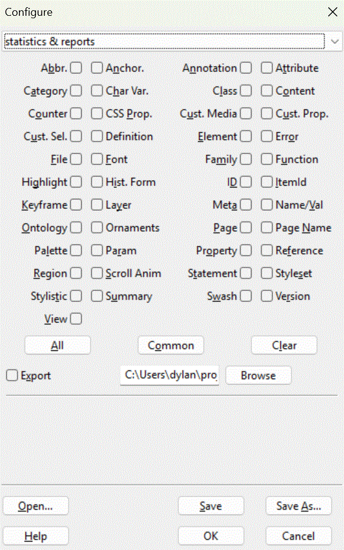

The statistics & reports panel is part of the Configure Dialogue.

ssc can output a number of statistical reports, allowing you to verify a site’s consistency, and gain a broad understanding of its size and technical content.
This report lists all the abbreviations defined by <ABBR> elements, so you can see whether the same abbreviations have the same expansions across the site.
Output element attribute report, which expands the element report to output information about attributes used.
Output category report, which output the total quantity of nits reported by nit category.
This report lists all the classes used across the site, both in CLASS attributes, and as defined in CSS files. It allows to you seen which classes are defined in CSS but not used, and which classes are used but not defined.
This report lists all the CSS properties used across the site, both in CSS files and in STYLE attributes.
Output custom media report, which lists all named custom media definitions encountered.
Output custom property report, which lists all named custom property definitions encountered.
This report lists all the definitions given by <DFN> elements.
This report lists all the elements used across the site.
This report summarises all the significant nits found by SSC, including errors and warnings.
Output file report, which reports the number of pages processed, and summarises file sizes.
Output font report, which lists all fonts used across the site.
This report lists all the font families used across the site.
This report lists all the IDs, as defined by the ID attribute, found across the site.
This report lists all the ontology item identifiers used across the site, as specified by use of the ITEMID attribute.
Output keyframe report, which lists all named keyframes encountered.
Produce statistics on <META> usage in <HEAD>. Note that pragmas reported (http–equiv) are those found in the HTML source, not those returned by the HTTP protocol. Remember that many web servers (not all) will remove some pragmas when serving pages.
Output name/value pairs report, which helps you identify inconsistencies between definitions across the site.
Output ontology report, which gives an insight into the ontological depth of the site being analysed.
Output ornament report, which reports all named CSS font ornaments encountered.
Produce statistics for each web page encountered.
Output page name report, which reports all named CSS page names encountered.
Output palette report, which reports all named CSS palettes encountered.
Output ontology property count report, as an addendum to the ontology report.
Output a reference report, which identifies, as precisely as it can, which versions of HTML, XHTML, CSS, etc., are found across the site.
Output region report, which reports all CSS named regions encountered.
Output scroll animation report, which reports all CSS named scroll animations encountered.
Output CSS statement report, which summarises all CSS statements encountered.
Output styleset report, which reports all CSS named stylesets encountered.
Output stylistic report, which reports all CSS named stylistics encountered, excluding the band themselves.
Produce a summary of overall statistics for the website, including grand totals.
Output swash report, which reports all CSS named swashes encountered.
Output version report, which summarises versions of HTML, SVG, MathML, etc., encountered
Output view report, which reports all CSS named views encountered.
export allows you to output the statistics to your chosen file.